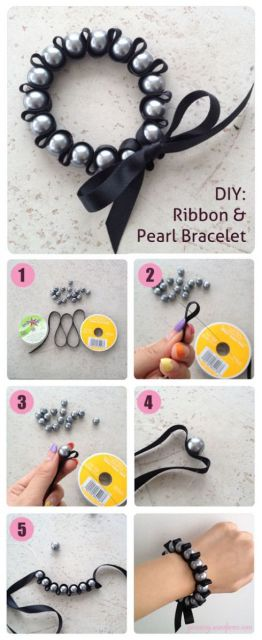

Como fazer Bijuteria com fitas
Se você não abre mão de caprichar no look, pode apostar na ideia de fazer bijuterias com fita de cetim. Os acessórios rendem ideias incríveis e pode até se tornar uma oportunidade de ganhar dinheiro fazendo artesanato com fita de cetim.
Nesta ideia, a fita azul marinho foi usada como base para fazer a pulseira com pérolas. O resultado fica lindo, e a ideia é super fácil de reproduzir (veja mais abaixo nos tutoriais).

Passo a Passo:
- Separe os materiais – fita de cetim, linha de anzol, agulha e pérolas;
- Faça uma dobrinha na fita de cetim;
- Encaixe uma pérola ao lado desssa dobrinha e passe a agulha com a linha do anzol, pegando a dobra e orifício da pérola;
- Faça mais uma dobrinha após a pérola e encaixe uma nova pérola para costurar;
- Vá fazendo isso até formar a pulseira com pérolas e fitas de cetim;
Outro exemplo:
Materiais
Aproximadamente 20 cm de fita ( para fazer no tamanho certo sugerimos aproximadamente três vezes o comprimento do seu pulso.);
Pérolas artificiais ou grânulos (para este tutorial foram usadas de 12 milímetros);
Linha invisível ou na cor da fita de cetim
Agulha
Tesoura
Passo a Passo
- Passe a linha na agulha. Pegue a fita de cetim e dê um nós com aproximadamente 10 centímetros a partir da ponta. Em seguida, dobre a fita e passe a agulha no centro dessa dobra.
- Agora passe a agulha na pérola e junte-a na dobra.
- Em seguida, faça uma nova dobra, na mesma altura da outra e passe a agulha com a linha. Procure passar a linha sempre na direção do furo das pérolas.
- Repita os passos 2 e 3 até você costurar todas as pérolas no tamanho que deseja a sua pulseira. Ao final da última dobra dê um nó na linha. Antes de retirar a agulha dê um nó na fita de cetim como no primeiro passo e deixe mais aproximadamente 10 centímetros para amarrá-la.